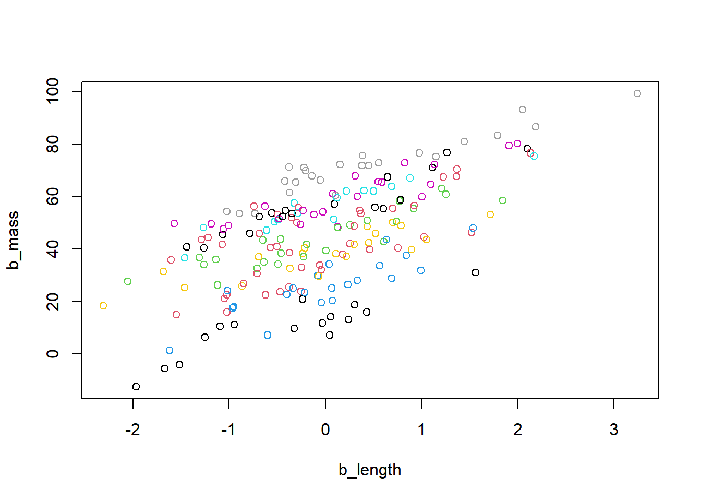

Welcome to the lab exercises for GLMM! In this section, we would like to present 3 different datasets, each one with a different approach and different uses of GLMMs.
Our examples in lecture used the lme4 package, which is great for GLMMs. You can use the lmer() function for linear mixed effects models or the glmer() function for generalized linear mixed effects models. However, there is another package that can be used to build GLMMs that you should be aware of, called glmmTMB. Overall, they are very similar, and you can often use either one and be just fine. The glmmTMB() function is more flexible with zero-inflated models and negative binomial models than the lme4 package, though. Furthermore, if you are running into convergence issues with lme4, you can try glmmTMB, which tends to have less convergence issues.
Model convergence is the process where the parameters of a model stabilize during an iterative optimization process, such as in Maximum Likelihood Estimation or Bayesian methods. It is particularly relevant in the fitting of complex models, such as those involving multiple parameters, hierarchical structures, or random effects. If a model fails to converge, it means that it was unable to land on a stable set of parameters. This could indicate an underlying problem with the model, but it could also potentially be fixed by using the glmmTMB package.
Another possible solution for convergence issues is by running your model in JAGS. An example for running a GLMM in JAGS can be found in exercise 3.
Load Exercise_1.csv
As explained during the lecture, for this exercise you will be working with a hypothetical dataset. Let’s consider that we captured birds during one year, in different seasons, and we collected blood samples from each individual to obtain their hemoglobin level. Thus, this dataset is composed by only 3 different variables: Unique individual ID, Seasons of the year and Hemoglobin values for each individual.
First thing is to explore and plot the data, to see if there is any kind of relationship among the variables. After that, decide which is/are the random effects that you need to consider and what kind of link function you will need to use in this exercise. You might create different models and then see which one fits better.
Load beesurv.csv
Let’s imagine a scenario where we want to find out what influences how many bees visit flowers on a given day. We went to each of 10 sites, surveyed the bee visitation on the flowers present, and recorded the site number, temperature, wind speed, and number of observed visits to flowers. We visited each site 10 separate days, which gave us 10 data points for each site.
We generate a synthetic dataset representing the correlation between body length and body mass in a fictional snake species. The dataset includes a random effect designed for analysis using a linear mixed-effects model. Body length serves as the predictor variable, and we posit that snakes were captured at various sites. Our analysis focuses on a random intercept model, where the dataset features a consistent slope for the influence of body length on body mass across all sites, but distinct intercepts are assigned to each site. The underlying assumption of the mixed model is that the site intercepts follow a normal distribution centered around their mean.
Our objective is to investigate the connection between body length and body mass in a fictional snake dataset.
Our data characteristics include: Body length as a predictor variable Body mass as a response variable Site as a random effect
We will use a linear mixed-effects model with the same slope for body length across all sites, and unique intercepts for each site
We can assume that site intercepts follow a normal distribution around their mean.
## Loading required package: rjags## Loading required package: coda## Linked to JAGS 4.3.1## Loaded modules: basemod,bugs##
## Attaching package: 'R2jags'## The following object is masked from 'package:coda':
##
## traceplot##
## Attaching package: 'jagsUI'## The following objects are masked from 'package:R2jags':
##
## autojags, jags, traceplot## The following object is masked from 'package:coda':
##
## traceplot# Set the seed for reproducibility
set.seed(123)
# Define parameters
samplesize <- 200 # Number of observations
nsites <- 10 # Number of sites
b_length <- sort(rnorm(samplesize)) # Explanatory variable (body length)
# Generate a random grouping variable 'sites' with replacement
sites <- sample(1:10, samplesize, replace = TRUE)
# Display the count of observations per site
table(sites)## sites
## 1 2 3 4 5 6 7 8 9 10
## 18 21 24 21 15 22 20 24 15 20# True intercept parameters
int_true_mean <- 45 # True mean intercept
int_true_sigma <- 10 # True standard deviation of intercepts
int_true_sites <- rnorm(n = nsites, mean = int_true_mean, sd = int_true_sigma) # True intercept of each site
# Create a matrix to represent the intercept of each snake individual based on its site
sitemat <- matrix(0, nrow = samplesize, ncol = nsites)
for (i in 1:nrow(sitemat)) sitemat[i, sites[i]] <- 1
int_true <- sitemat %*% int_true_sites
# True slope parameter
slope_true <- 10
# Calculate true means and standard deviation
mu <- int_true + slope_true * b_length
sigma <- 5
# Generate response variable 'b_mass' based on normal distributions
b_mass <- rnorm(samplesize, mean = mu, sd = sigma)
# Create a data frame 'snakes3' with explanatory and response variables
snakes3 <- data.frame(b_length = b_length, b_mass = b_mass, site = sites)
# Display the first few rows of the data frame
head(snakes3)## b_length b_mass site
## 1 -2.309169 18.346425 7
## 2 -2.053247 27.683564 3
## 3 -1.966617 -12.462933 9
## 4 -1.686693 31.497302 7
## 5 -1.667942 -5.439032 9
## 6 -1.617883 1.521710 4# Create a scatter plot of 'b_mass' against 'b_length' colored by site
plot(b_mass ~ b_length, col = site, data = snakes3)
When preparing the dataset for JAGS analysis, we incorporate the number of sites as an extra element in the list.
# Prepare data for analysis with JAGS, including the number of sites
Nsites <- length(levels(as.factor(snakes3$site)))
jagsdata_s3 <- with(snakes3, list(b_mass = b_mass, b_length = b_length, site = site,
N = length(b_mass), Nsites = Nsites))
# JAGS model specification function
filename = "JAGS.txt"
cat("
model{
# Likelihood:
for (i in 1:N){
b_mass[i] ~ dnorm(mu[i], tau) # Likelihood of the response variable
mu[i] <- alpha + a[site[i]] + beta * b_length[i] # Model for the mean
}
# Priors:
alpha ~ dnorm(0, 0.01) # Prior for the overall intercept
sigma_a ~ dunif(0, 100) # Prior for the standard deviation of random effect
tau_a <- 1 / (sigma_a * sigma_a) # Convert standard deviation to precision
for (j in 1:Nsites){
a[j] ~ dnorm(0, tau_a) # Prior for random intercept for each site
}
beta ~ dnorm(0, 0.01) # Prior for the slope
sigma ~ dunif(0, 100) # Prior for the standard deviation of fixed effect
tau <- 1 / (sigma * sigma) # Convert standard deviation to precision
}
",file=filename)In addition to the overall intercept (alpha), we calculate a distinct intercept (a) for each site. These site-specific intercepts follow a normal distribution centered around the overall intercept, introducing a variance term (sigma_a). This variance, representing differences between sites, is an additional parameter recorded during the model fitting process.
# Initial values function for JAGS
init_values <- function(){
list(alpha = rnorm(1), sigma_a = runif(1), beta = rnorm(1), sigma = runif(1))
}
# Parameters to be saved from the JAGS model
params <- c("alpha", "beta", "sigma", "sigma_a")
# Fit the JAGS model to the data
fit_lm3 <- jags(data = jagsdata_s3, inits = init_values, parameters.to.save = params, model.file = filename,
n.chains = 3, n.iter = 20000, n.burnin = 5000, n.thin = 10, DIC = FALSE)##
## Processing function input.......
##
## Done.
##
## Compiling model graph
## Resolving undeclared variables
## Allocating nodes
## Graph information:
## Observed stochastic nodes: 200
## Unobserved stochastic nodes: 14
## Total graph size: 1024
##
## Initializing model
##
## Adaptive phase.....
## Adaptive phase complete
##
##
## Burn-in phase, 5000 iterations x 3 chains
##
##
## Sampling from joint posterior, 15000 iterations x 3 chains
##
##
## Calculating statistics.......
##
## Done.## JAGS output for model 'JAGS.txt', generated by jagsUI.
## Estimates based on 3 chains of 20000 iterations,
## adaptation = 100 iterations (sufficient),
## burn-in = 5000 iterations and thin rate = 10,
## yielding 4500 total samples from the joint posterior.
## MCMC ran for 0.119 minutes at time 2023-11-14 08:22:48.075573.
##
## mean sd 2.5% 50% 97.5% overlap0 f Rhat n.eff
## alpha 24.915 10.079 2.938 26.011 41.351 FALSE 0.986 1.001 2144
## beta 9.923 0.349 9.220 9.930 10.589 FALSE 1.000 1.001 3972
## sigma 4.586 0.237 4.163 4.575 5.080 FALSE 1.000 1.000 4500
## sigma_a 30.090 12.129 14.394 27.514 61.154 FALSE 1.000 1.002 4500
##
## Successful convergence based on Rhat values (all < 1.1).
## Rhat is the potential scale reduction factor (at convergence, Rhat=1).
## For each parameter, n.eff is a crude measure of effective sample size.
##
## overlap0 checks if 0 falls in the parameter's 95% credible interval.
## f is the proportion of the posterior with the same sign as the mean;
## i.e., our confidence that the parameter is positive or negative.Examine the potential scale reduction factor (Rhat) for each parameter. What does an Rhat value close to 1 indicate about the convergence of the chains? In the context of this analysis, how would you interpret the Rhat values for “alpha,” “beta,” “sigma,” and “sigma_a”? Discuss whether these Rhat values suggest convergence and the implications for the reliability of the parameter estimates.
Consider the distribution of the random intercepts (a[j]) for each site. How might the variability in these intercepts impact the overall model’s ability to capture site-specific effects on body mass? Discuss whether the model adequately represents the heterogeneity among sites, and propose any potential modifications to the model structure to better account for site-specific characteristics influencing body mass.
Investigate the autocorrelation structure within the MCMC chains. How would you assess the autocorrelation of the parameter “beta” over the course of the iterations? If autocorrelation is detected, discuss the potential consequences for the precision of the parameter estimate and suggest strategies to address or mitigate autocorrelation in the MCMC sampling process.